📌 1주차 — 프로젝트 관리 기초 (Day 1–5)
D01
오리엔테이션 & 프로젝트 개요
{kind=link}
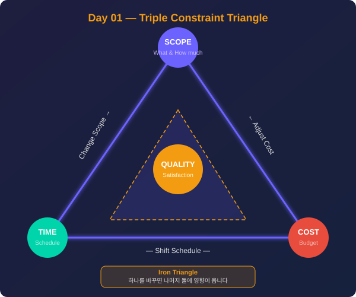
범위(Scope) · 일정(Time) · 원가(Cost) 삼각형. 하나를 변경하면 나머지 둘에 반드시 영향이 옵니다. 중심의 품질(Quality)은 세 제약의 균형에서 나옵니다.
D02
프로젝트 통합 관리
{kind=link}
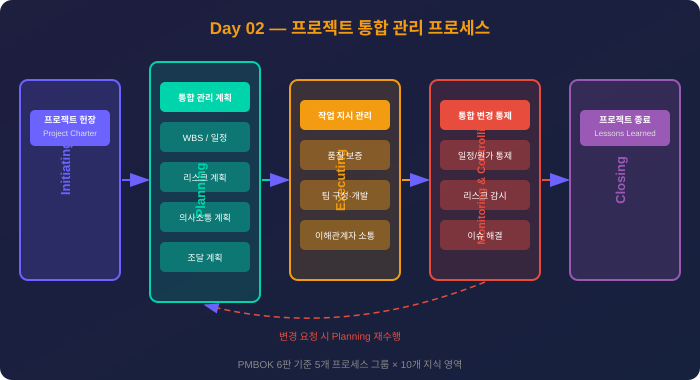
PMBOK 6판 기준 착수→계획→실행→감시통제→종료 프로세스 그룹. 감시통제에서 변경 요청 발생 시 계획 단계로 피드백됩니다.
D03
프로젝트 범위 관리
{kind=link}
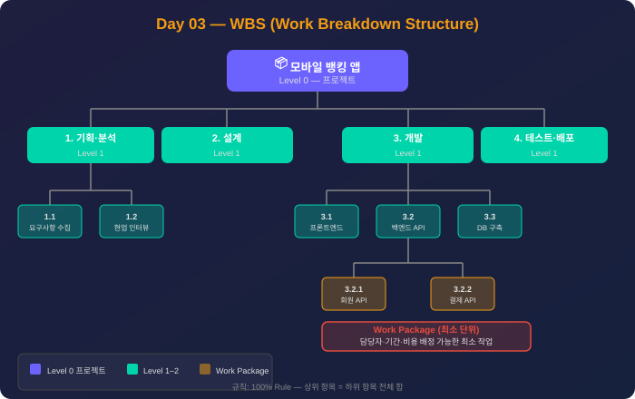
모바일 뱅킹 앱 WBS 예시. 100% Rule: 상위 항목의 작업 = 하위 항목 전체 합. 가장 하위 Work Package 단위에 담당자·기간·비용을 배정합니다.
D04
프로젝트 일정 관리
{kind=link}
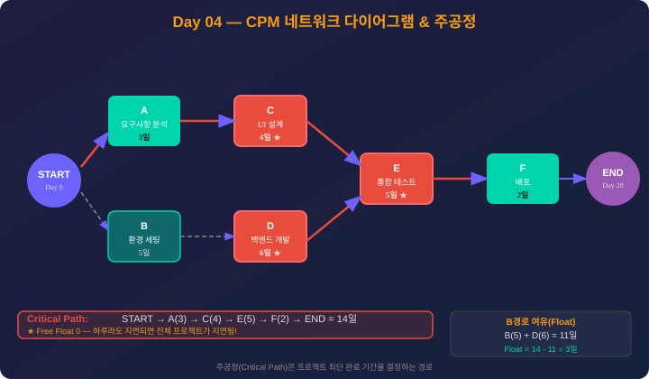
빨간색 경로(A→C→E→F = 14일)가 주공정입니다. Float이 0이므로 하루라도 지연되면 전체 프로젝트가 지연됩니다. B-D 경로는 Float 3일 여유가 있습니다.
D05
프로젝트 원가 관리
{kind=link}
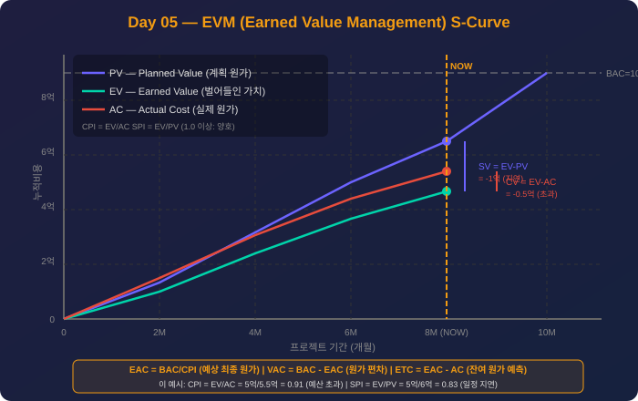
현재 시점(8개월): EV=5억, AC=5.5억, PV=6억. CPI=0.91(예산 초과), SPI=0.83(일정 지연). EAC = BAC/CPI로 최종 원가를 예측할 수 있습니다.
📌 1–2주차 — 프로젝트 관리 심화 (Day 6–11)
D06
품질 관리

Plan(계획)→Do(실행)→Check(측정)→Act(개선)의 지속적 개선 사이클. QA는 P+D 단계의 예방 활동, QC는 C 단계의 검출 활동입니다.
D07
자원 관리
{kind=link}
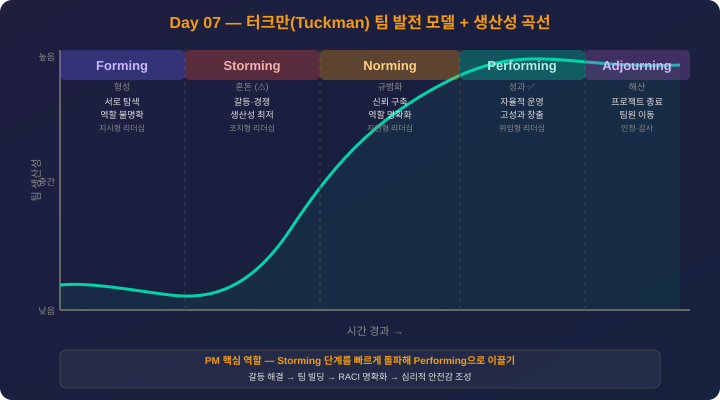
Forming→Storming→Norming→Performing→Adjourning. PM의 핵심 역할은 Storming(갈등) 단계를 빠르게 통과시켜 Performing으로 이끄는 것입니다.
D08
의사소통 관리
{kind=link}
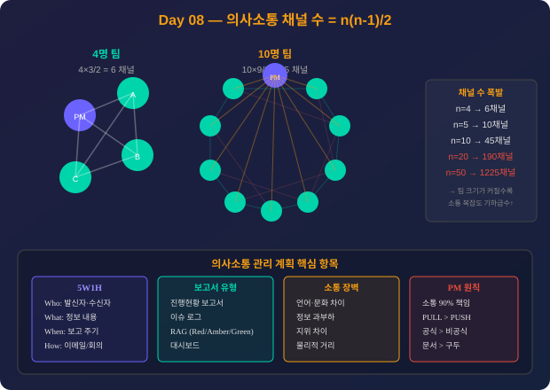
팀원 10명 → 채널 45개, 20명 → 190개. 팀 규모가 커질수록 소통 복잡도가 기하급수적으로 증가합니다. 의사소통 계획은 5W1H로 수립합니다.
D09
리스크 관리
{kind=link}
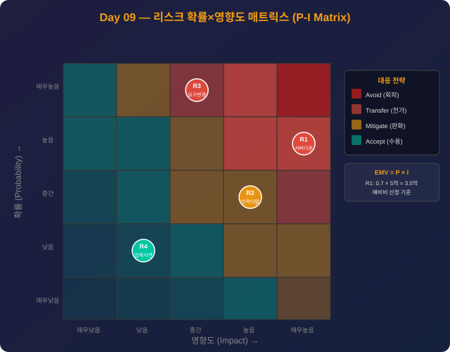
5×5 색상 매트릭스. 빨강=회피·전가, 노랑=완화, 초록=수용. EMV = P × I로 각 리스크의 예상 금전 가치를 계산해 예비비를 산정합니다.
D10
조달 관리
{kind=link}
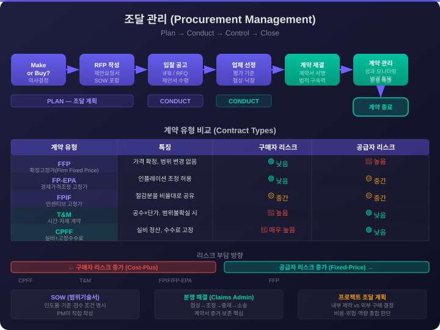
Make-or-Buy → RFP → 입찰 → 선정 → 계약 체결 → 관리 → 종료. 계약 유형: FFP(구매자 리스크↓) ↔ CPFF(공급자 리스크↓). T&M은 애자일·단기 프로젝트에 적합합니다.
D11
이해관계자 관리
{kind=link}
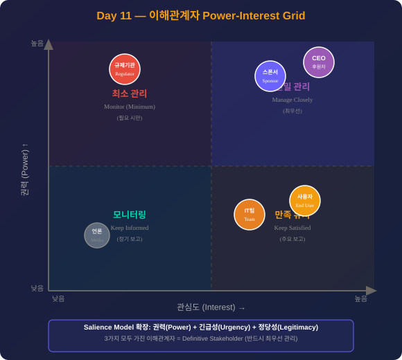
고권력·고관심=긴밀관리, 고권력·저관심=만족유지, 저권력·고관심=모니터링, 저권력·저관심=최소관리. Salience Model로 정당성·긴급성까지 추가 분석합니다.
📌 3주차 — 기술 이해 (Day 12–16)
D12
소프트웨어 공학
{kind=link}
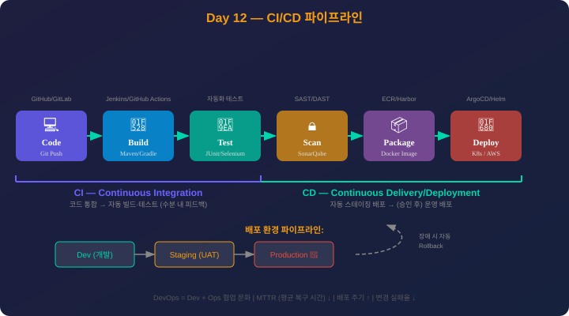
Code→Build→Test→Scan→Package→Deploy. CI는 코드 통합·자동 테스트, CD는 스테이징→운영 자동 배포. Dev→Staging→Production 환경 파이프라인.
D13
네트워크
{kind=link}
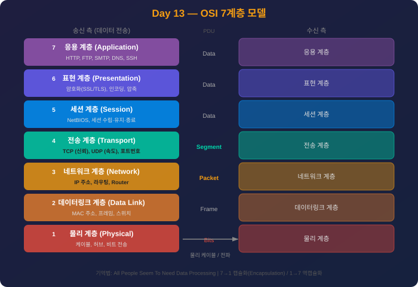
7→1 캡슐화(Encapsulation), 1→7 역캡슐화. 4계층=TCP/UDP+포트, 3계층=IP+라우팅, 2계층=MAC+스위치, 1계층=물리. 기억법: All People Seem To Need Data Processing.
D14
정보보안
{kind=link}
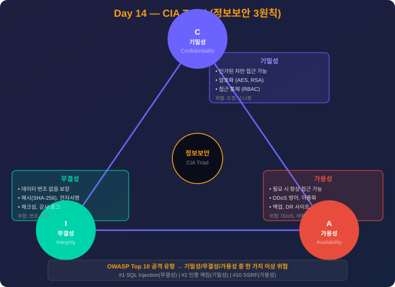
기밀성(Confidentiality)=암호화·접근통제, 무결성(Integrity)=해시·전자서명, 가용성(Availability)=이중화·DDoS방어. OWASP Top 10 공격은 세 요소 중 하나 이상을 위협합니다.
D15
데이터베이스

고객(1)–주문(N)–상품(M) 관계. N:M 관계는 주문상품 브리지 테이블로 분해합니다. PK=기본키, FK=외래키, 정규화 1NF→2NF→3NF 순서로 중복을 제거합니다.
D16
신기술 트렌드
{kind=link}
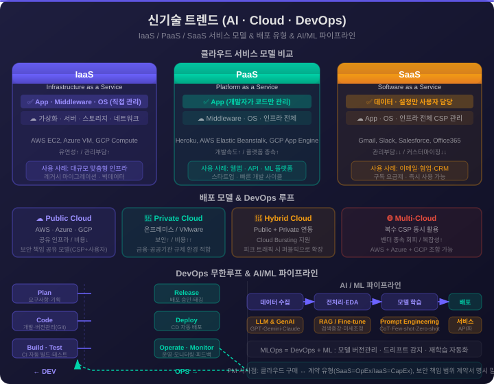
IaaS(인프라 직접관리) → PaaS(코드만 관리) → SaaS(설정만 관리). 배포 모델: Public/Private/Hybrid/Multi-Cloud. DevOps 무한루프 + MLOps(모델 버전관리·드리프트 감지).
📌 보너스 — 애자일 & PM 도구 (Day 17)
D17
애자일/스크럼 & PM 도구
{kind=link}
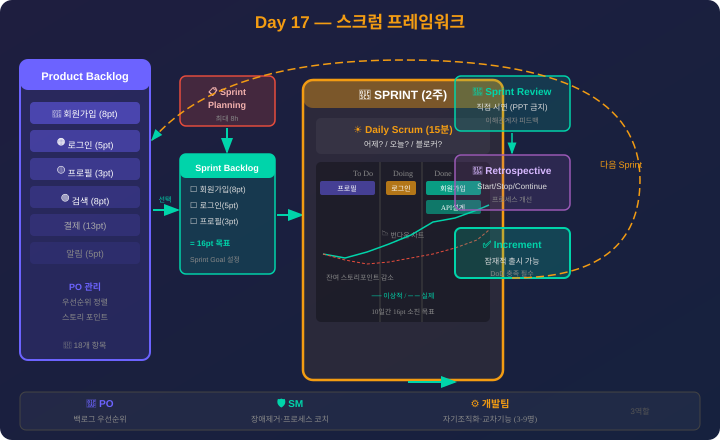
Product Backlog → Sprint Planning → Sprint Backlog → 2주 Sprint (Daily Scrum 포함) → Review + Retrospective → Increment. 반복하며 제품을 점진적으로 완성합니다.